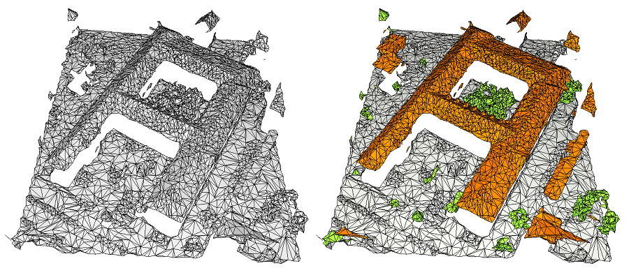
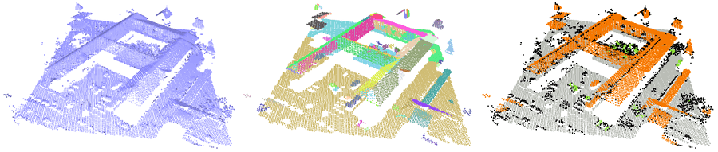
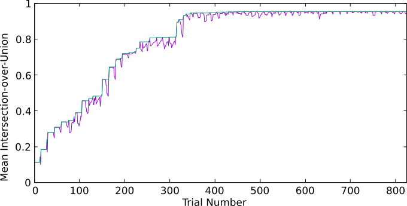
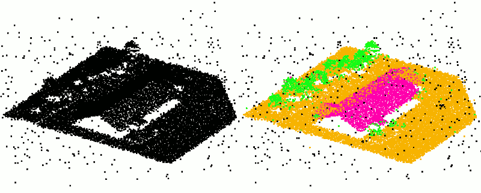
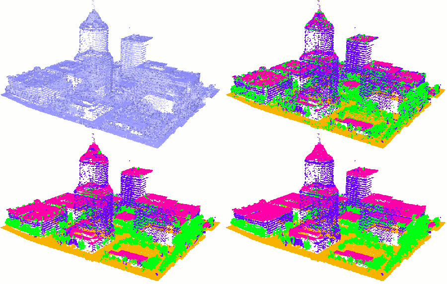

This component implements the algorithm described in [5] (section 2), generalized to handle different types of data, multiple features and multiple labels. It classifies a data set into a user-defined set of labels, such as ground, vegetation and buildings. A flexible API is provided so that users can classify any type of data which they can index and for which they can compute relevant features, compute their own local features on the input data set and define their own labels.
Note
This component requires C++11 and depends on the Boost libraries Serialization and IO Streams (compiled with the GZIP dependency).
a set of labels (for example: ground, building, vegetation) is defined by the user;
a classifier is defined and trained: from the set of values taken by the features at an input item, it measures the likelihood of this item to belong to one label or another;
classification is computed itemwise using the classifier;
additional regularization can be used by smoothing either locally or globally through a graph cut[1] approach.
This package is designed to be easily extended by users: more specifically, features and labels can be defined by users to handle any data they need to classify.
Currently, CGAL provides data structures to handle classification of point sets, surface meshes and clusters.
Common Data Structures
Label Set
A label represents how an item should be classified, for example: vegetation, building, road, etc. In CGAL, a label has a name and is simply identified by a Label_handle. Note that names are not used for identification: two labels in the same set can have the same name (but not the same handle).
The following code snippet shows how to add labels to the classification object:
Features are defined as scalar fields that associate each input item with a specific value. Note that in order to limit memory consumption, we use the type float for these scalar values (as well as for every floating point value in this package). A feature has a name and is identified by a Feature_handle.
The computation of features and their addition to the feature set is done in a single step using the Feature_set::add<Feature>() method. If CGAL was linked with thirdpartyTBB, features can be computed in parallel (see below).
CGAL provides some predefined features (see Point Set Classification for example). In the following code snippet, a subset of these predefined features are instantiated (in parallel if thirdpartyTBB is available). Note that all the predefined features can also be automatically generated in multiple scales (see Point Set Classification for example).
Users may want to define their own features, especially if the input data set comes with additional properties that were not anticipated by CGAL. A user-defined feature must inherit from Feature_base and provide a method value() that associates a scalar value to each input item.
The following example shows how to define a feature that discriminates points that lie inside a 2D box from the others:
// User-defined feature that identifies a specific area of the 3D
// space. This feature takes value 1 for points that lie inside the
Classification is based on the computation of local features. These features can take advantage of shared data structures that are precomputed and stored separately. Both these features and the underlying data structures depend on the type of data that needs to be classified. CGAL provides data structures to classify point sets, surface meshes and clusters.
Point Set Classification
CGAL provides the following structures:
Point_set_neighborhood stores spatial searching structures and provides adapted queries for points;
Local_eigen_analysis precomputes covariance matrices on local neighborhoods of points and stores the associated eigenvectors and eigenvalues;
Planimetric_grid is a 2D grid used for digital terrain modeling.
Most of these data structures depend on a scale parameter. CGAL provides a method to estimate the average spacing based on a number of neighbors (see CGAL::compute_average_spacing()), which usually provides satisfying results in the absence of noise. In the presence of noise, CGAL::estimate_global_range_scale() provides an estimation of the smallest scale such that the point set has the local dimension of a surface (this method is both robust to noise and outliers, see Result).
The eigen analysis can be used to estimate normals. Note however that this analysis (based on Principal Component Analysis) might not be robust to a high level of noise. CGAL also provides more robust normal estimation functions (see for example CGAL::jet_estimate_normals()).
The following code snippet shows how to instantiate such data structures from an input PLY point set (the full example is given at the end of the manual).
Distance_to_plane measures how far away a point is from a locally estimated plane;
Eigenvalue measures one of the three local eigenvalues;
Elevation computes the local distance to an estimation of the ground;
Height_above computes the distance between the local highest point and the point;
Height_below computes the distance between the point and the local lowest point;
Vertical_dispersion computes how noisy the point set is on a local Z-cylinder;
Vertical_range computes the distance between the local highest and lowest points;
Verticality compares the local normal vector to the vertical vector.
These features are designed for point sets but can easily be used with surface meshes as well (see Mesh Classification). For more details about how these different features can help to identify one label or the other, please refer to their associated reference manual pages.
In addition, if the input data set has additional properties, these can also be used as features. For example, CGAL provides the following features:
Color_channel uses input color information if available;
Echo_scatter uses the number of returns (echo) provided by most LIDAR scanners if available;
Simple_feature uses any property map applicable to the input range and whose value type is castable to float (useful if an additional property of the input set should be used as is, for example an intensity measurement).
Users commonly want to use all predefined features to get the best result possible. CGAL provides a class Point_set_feature_generator that performs the following operations:
it estimates the smallest relevant scale;
it generates all needed analysis structures and provides access to them;
it generates all possible features (among all the CGAL predefined ones) based on which property maps are available (they use colors if available, etc.).
Multiple scales that are sequentially larger can be used to increase the quality of the results [3].
Note that using this class in order to generate features is not mandatory, as features and data structures can all be handled by hand. It is mainly provided to make the specific case of point sets simpler to handle. Users can still add their own features within their feature set.
Some data structure instantiated by the generator will be used by feature: for this reason, the generator should be instantiated within the same scope as the feature set and should not be deleted before the feature set.
The following snippet shows how to use the point set feature generator:
fig__Classification_point_set_fig Example of point set classification (left: input, right: output). Ground is grey, roofs are orange, vegetation is green.
Mesh Classification
Classification of mesh is performed by considering the face of a mesh as an atomic element that should be assign one label or another. Some structures such as neighborhood or Eigen analysis are significantly different from their equivalent for point sets; other data structures from point sets can be directly used by viewing the mesh as a point set through the use of a property map that associates each face with a representative point.
Hereafter, a mesh refers to a model of FaceListGraph.
CGAL provides the following structures:
Face_descriptor_to_center_of_mass_map is a property map that takes the face of a mesh as key type and returns the CGAL::Point_3 located at the center of mass of the face. It is useful to apply point set structures and features to surface meshes;
Local_eigen_analysis precomputes covariance matrices on local neighborhoods of triangles and stores the associated eigenvectors and eigenvalues (it is the same object as for point sets called with a different named constructor);
the other ones are computed by considering the mesh as a point set.
Similarly to Point_set_feature_generator, CGAL provides a class Mesh_feature_generator that estimates the smallest scale automatically and computes all predefined features on several scales. As for point sets, using this class in order to generate features is not mandatory, as features and data structures can all be handled by hand. It is mainly provided to make the specific case of meshes simpler to handle. Users can still add their own features within their feature set.
The following snippet shows how to use the mesh feature generator:
Feature_set features;
Face_point_map face_point_map (&mesh); // Associates each face to its center of mass
generator.generate_point_based_features (features); // Features that consider the mesh as a point set
generator.generate_face_based_features (features); // Features computed directly on mesh faces
#ifdef CGAL_LINKED_WITH_TBB
features.end_parallel_additions();
#endif
The full example is given at the end of the manual.

fig__Classification_mesh_fig Example of mesh classification (left: input, right: output). Ground is grey, roofs are orange, vegetation is green.
Cluster Classification
Classifying clusters of items instead of raw sets of items can have several advantages:
if the data set is very large, using clusters can drastically decrease the complexity and thus the need for computation time and memory;
clusters are more complex objects than raw items (isolated points or triangles of a mesh) and thus provide additional information (size of cluster, spatial consistency, etc.);
by construction, the output classification is less noisy (if all points of a facade are in the same cluster, then they are guaranteed to all be classified in the same label).
For example, when dealing with urban scenes that typically contain large planar sections, it may be more efficient to first detect planes (with CGAL::Shape_detection::Region_growing or CGAL::Shape_detection::Efficient_RANSAC for example) and then to classify each subset of points belonging to a specific plane as clusters.
The following snippet shows, from a pointwise feature set, how to generate the statistical features from a pointwise feature set (along with these latest cluster features):
Feature_set features;
#ifdef CGAL_LINKED_WITH_TBB
features.begin_parallel_additions();
#endif
// First, compute means of features.
for (std::size_t i = 0; i < pointwise_features.size(); ++ i)
The full example is given at the end of the manual.

fig__Classification_cluster_fig Example of cluster classification mesh (left: input, middle: clusters computed from region growing, right: output). Ground is grey, roofs are orange, vegetation is green, points not assigned to a cluster are black.
Classifiers
Classification relies on a classifier: this classifier is an object that, from the set of values taken by the features at an input item, computes the probability that an input item belongs to one label or another. A model of the concept CGAL::Classification::Classifier must take the index of an input item and store the probability associated to each label in a vector. If a classifier returns the value 1 for a pair of label and input item, it means that this item belongs to this label with certainty; values close to 0 mean that this item is not likely to belong to this label.
CGAL provides ETHZ::Random_forest_classifier, a classifier based on the Random Forest Template Library developed by Stefan Walk at ETH Zurich [2] (the library is distributed under the MIT license and is included with the CGAL release, the user does not have to install anything more). This classifier uses a ground truth training set to construct several decision trees that are then used to assign a label to each input item.
This classifier cannot be set up by hand and requires a ground truth training set. The training algorithm is fast but usually requires a high number of inliers. The training algorithm uses more memory at runtime and the configuration files are larger than those produced by Sum_of_weighted_features_classifier, but the output quality is usually significantly better, especially in the cases where many labels are used (more than five).
An example shows how to use this classifier. For more details about the algorithm, please refer to README provided in the ETH Zurich's code archive.
Note that this classifier usually produces results with a lower quality than ETHZ::Random_forest_classifier. It is provided for the sake of completeness and for testing purposes, but if you are not sure what to use, we advise using the ETHZ Random Forest instead.
An example shows how to use this classifier. For more details about the algorithm, please refer to the official documentation of OpenCV.
It uses the C++ API of the thirdpartyTensorFlow library.
Warning
This feature is still experimental: it may not be stable and is likely to undergo substantial changes in future releases of CGAL. The API changes will be announced in the release notes.
The provided interface is a feature-based neural network: a set of features is used as an input layer followed by a user-specified number of hidden layers with a user-specified activation function. The output layer is a softmax layer providing, for each label, the probability that an input item belongs to it.
This classifier cannot be set up by hand and requires a ground truth training set. The training algorithm usually requires a higher number of inliers than random forest. The quality of the results, so far, is comparable to random forest.
An example shows how to use this classifier. For more details about the algorithm, please refer to the TensorFlow tutorials.
Sum of Weighted Features
This latest classifier defines the following attributes:
a weight applied to each feature;
an effect applied to each pair of feature and label.
For each label, the classifier computes an energy as a sum of features normalized with both their weight and the effect they have on this specific label.
The main advantage of this classifier is that it can be set up by hand. Nevertheless, it also embeds a training algorithm.
Weights and Effects
Each feature is assigned a weight that measures its strength with respect to the other features.
Each pair of feature and label is assigned an effect that can either be:
FAVORING: the label is favored by high values of the feature;
NEUTRAL: the label is not affected by the feature;
PENALIZING: the label is favored by low values of the feature.
For example, vegetation is expected to have a high distance to plane and have a color close to green (if colors are available); facades have a low distance to plane and a low verticality; etc.
Let \(x=(x_i)_{i=1..N}\) be a potential classification result with \(N\) the number of input items and \(x_i\) the class of the \(i^{th}\) item (for example: vegetation, ground, etc.). Let \(f_j(i)\) be the raw value of the \(j^{th}\) feature at the \(i^{th}\) item and \(w_j\) be the weight of this feature. We define the normalized value \(F_j(x_i) \in [0:1]\) of the \(j^{th}\) feature at the \(i^{th}\) item as follows:
Each feature has a specific weight and each pair of feature-label has a specific effect. This means that the number of parameters to set up can quickly explode: if 6 features are used to classify between 4 labels, 30 parameters have to be set up (6 weights + 6x4 feature-label relationships).
Though it is possible to set them up one by one, CGAL also provides a method train() that requires a small set of ground truth items provided by users. More specifically, users must provide, for each label they want to classify, a set of known inliers among the input data set (for example, selecting one roof, one tree and one section of the ground). The training algorithm works as follows:
for each feature, a range of weights is tested: the effect each feature has on each label is estimated. For a given weight, if a feature has the same effect on each label, it is non-relevant for classification. The range of weights such that the feature is relevant is estimated;
for each feature, uniformly picked weight values are tested and their effects are estimated;
each inlier provided by the user is classified using this set of weights and effects;
the mean intersection-over-union (see Evaluation) is used to evaluate the quality of this set of weights and effects;
the same mechanism is repeated until all features' ranges have been tested. Weights are only changed one by one, the other ones are kept to the values that gave the latest best score.
This usually converges to a satisfying solution (see Figure fig__Classification_trainer_fig). The number of trials is user defined, set to 300 by default. Using at least 10 times the number of features is advised (for example, at least 300 iterations if 30 features are used). If the solution is not satisfying, more inliers can be selected, for example, in a region that the user identifies as misclassified with the current configuration. The training algorithm keeps, as initialization, the best weights found at the previous round and carries on trying new weights by taking new inliers into account.

fig__Classification_trainer_fig Example of evolution of the mean intersection-over-union. The purple curve is the score computed at the current iteration, green curve is the best score found so far.
Result
Figure fig__Classification_sowf_result_fig shows an example of output on a defect-laden point set. The accuracy on this example is 0.97 with a mean intersection-over-union of 0.85 (see section Evaluation).

fig__Classification_sowf_result_fig Example of classification on a point set with medium noise and outliers (left: input, right: output). Ground is orange, roofs are pink, vegetation is green. Outliers are classified with an additional label outlier in black.
Classification Functions
Classification is performed by minimizing an energy over the input data set that may include regularization. CGAL provides three different methods for classification, ranging from high speed / low quality to low speed / high quality:
On a point set of 3 millions of points, the first method takes about 4 seconds, the second about 40 seconds and the third about 2 minutes.

fig__Classification_image Top-Left: input point set. Top-Right: raw output classification represented by a set of colors (ground is orange, facades are blue, roofs are pink and vegetation is green). Bottom-Left: output classification using local smoothing. Bottom-Right: output classification using graphcut.
Let \(x=(x_i)_{i=1..N}\) be a potential classification result with \(N\) the number of input items and \(x_i\) the label of the \(i^{th}\) item (for example: vegetation, ground, etc.). The classification is performed by minimizing the following energy:
\[ E(x) = \sum_{i = 1..N} E_{di}(x_i) \]
This energy is a sum of itemwise energies provided by the classifier and involves no regularization.
The following snippet shows how to classify points based on a label set and a classifier. The result is stored in label_indices, following the same order as the input set and providing for each point the index (in the label set) of its assigned label.
This allows to eliminate local noisy variations of assigned labels. Increasing the size of the neighborhood increases the noise reduction at the cost of higher computation times.
std::cerr << "Classification with local smoothing performed in " << t.time() << " second(s)" << std::endl;
t.reset();
Global Regularization (Graph Cut)
CGAL::Classification::classify_with_graphcut(): this method offers the best quality but requires longer computation time (see Figure fig__Classification_image, bottom-right). The total energy that is minimized is the sum of the partial data term \(E_{di}(x_i)\) and of a pairwise interaction energy defined by the standard Potts model [6] :
where \(\gamma>0\) is the parameter of the Potts model that quantifies the strengh of the regularization, \(i \sim j\) represents the pairs of neighboring items and \(\mathbf{1}_{\{.\}}\) the characteristic function.
A graph cut based algorithm (alpha expansion) is used to quickly reach an approximate solution close to the global optimum of this energy.
This method allows to consistently segment the input data set in piecewise constant parts and to correct large wrongly classified clusters. Increasing \(\gamma\) produces more regular result with a constant computation time.
To speed up computations, the input domain can be subdivided into smaller subsets such that several smaller graph cuts are applied instead of a big one. The computation of these smaller graph cuts can be done in parallel. Increasing the number of subsets allows for faster computation times but can also reduce the quality of the results.
The following snippet shows how to classify points using a graph cut regularization providing a model of CGAL::Classification::NeighborQuery, a strengh parameter \(\gamma\) and a number of subdivisions.
std::cerr << "Classification with graphcut performed in " << t.time() << " second(s)" << std::endl;
Evaluation
The class Evaluation allows users to evaluate the reliability of the classification with respect to a provided ground truth. The following measurements are available:
precision() computes, for one label, the ratio of true positives over the total number of detected positives;
recall() computes, for one label, the ratio of true positives over the total number of provided inliers of this label;
f1_score() is the harmonic mean of precision and recall;
intersection_over_union() computes the ratio of true positives over the union of the detected positives and of the provided inliers;
accuracy() computes the ratio of all true positives over the total number of provided inliers;
classifies the point set with the 3 different methods (this is for the sake of the example: each method overwrites the previous result, users should only call one of the methods);
This package is based on a research code by Florent Lafarge that was generalized, extended and packaged by Simon Giraudot in CGAL 4.12. Classification of surface meshes and of clusters were introduced in CGAL 4.13. The Neural Network classifier was introduced in CGAL 4.14.


 1.8.17
1.8.17